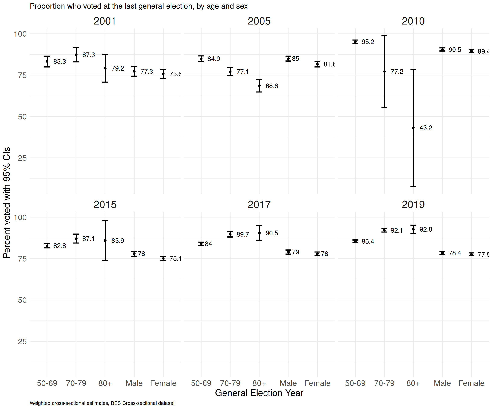
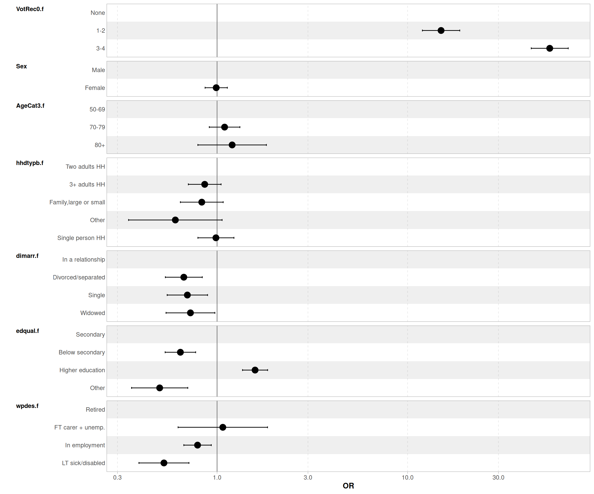
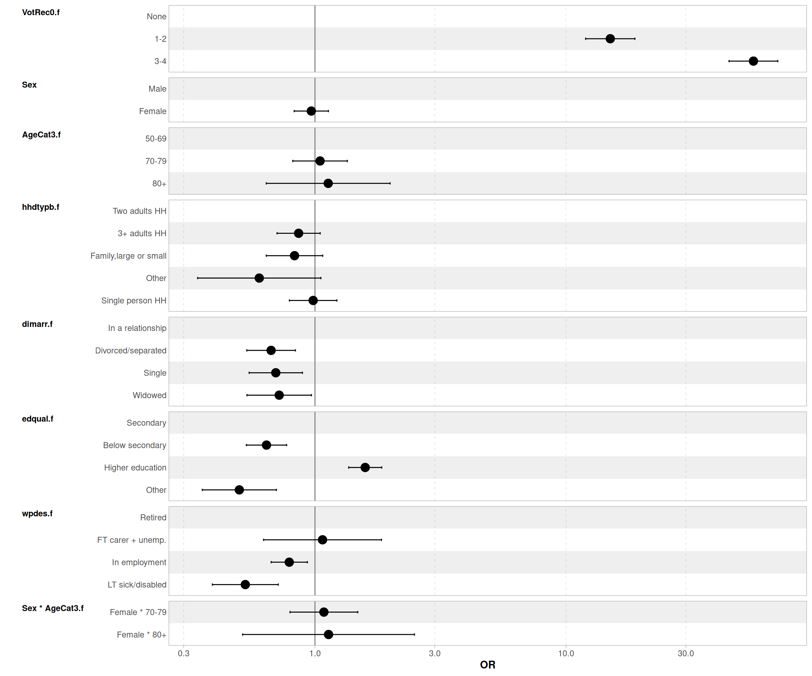
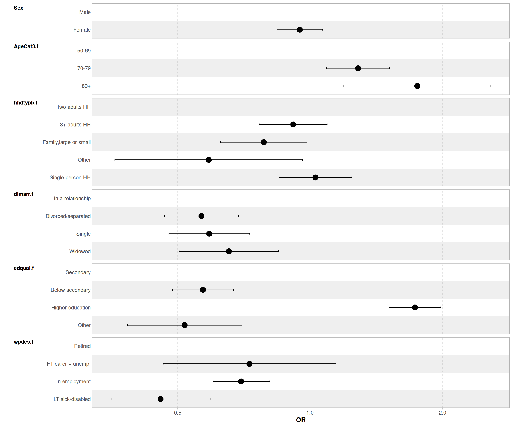
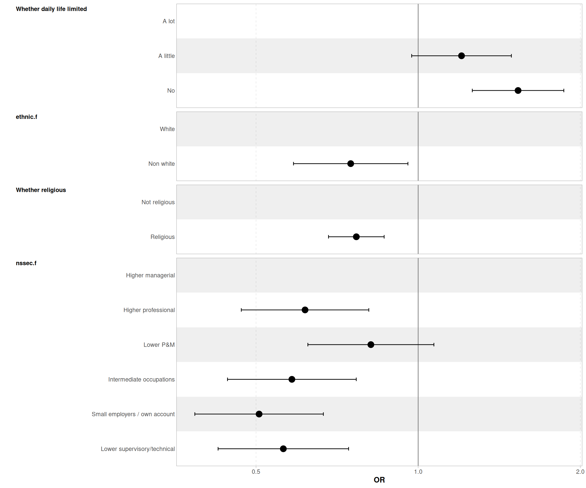
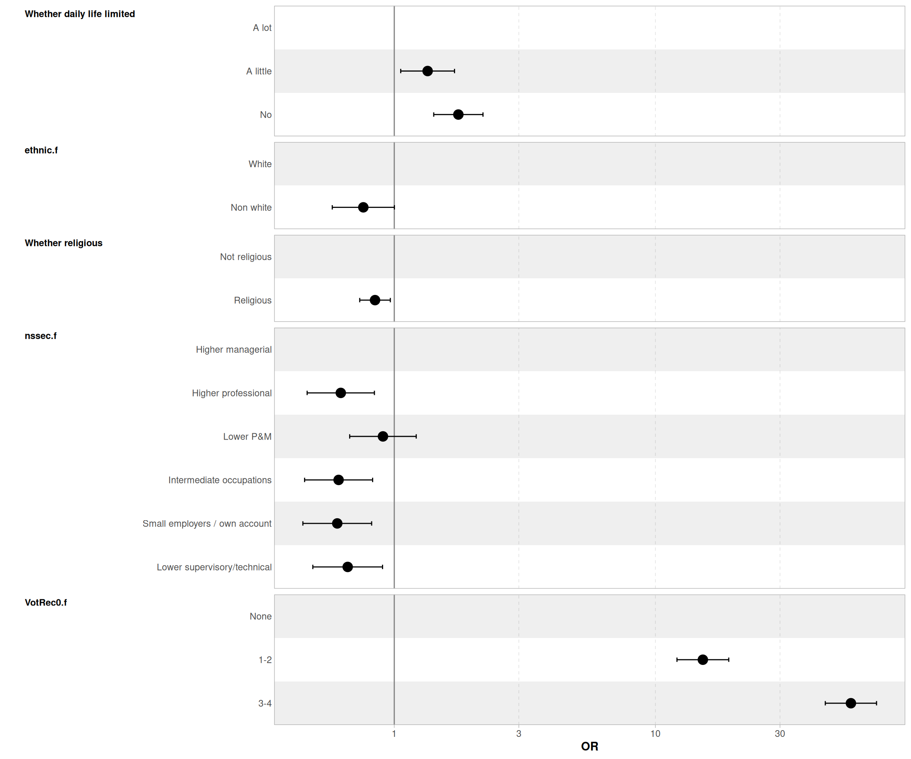

BES voting patterns study - draft version 2
Changes from version 1
Match recoding of variables with ELSA where possible
Renamed variables to match ELSA.
Changed gender to sex.
Added 4 way tables of age by sex by whether voted at the 2019 GE by all variables
Amended reference categories of variables.
Amended display of regression tables, wtih previous vote at bottom of table.
To do:
Search and add missing variables (Self perceived age; Life Expectancy expectation; Caring responsibility; Interest in politics; Charity association member; I want to give back to my community; grandchildren) to match ELSA’s where possible.
Investigate strong collinearity issue between past voting record and probability to vote at the 2019 GE.
1. Introduction
This document presents the results of an analysis of the 2019 British Election Study Wave 23 that focuses on turnout at the 2019 General Election among the 50+, looking at socio-demographic factors and past voter turnout, including at the 2005, 2010, 2015,2017 General Elections. This study aims to reproduce a similar analysis conducted with English Longitudinal Study of Ageing Wave 10 data.
2. Methods
Sample
Given that fieldwork for ELSA Wave 10 took place between October 2021 and March 2023, the BES dataset with the largest overlap was Wave 23, with fieldwork conducted between the 6th and the 26th of May 2022. Overall sample size for those aged over 50 is 18822. Comparability with analysis conducted on ELSA data is limited by the absence of ageing-specific variables in the BES. On the other hand, given that retrospective questions about vote participation were asked at Wave 23, no observation loss resulting from attrition occurred as would have been the case by linking the data with previous waves.
Original Variables
Below is the list of the original variables considered for the analysis.
| Name | Description | Variable label |
|---|---|---|
| p_turnout_2019 | Whether voted - 2019 GE | 2019 GE turnout |
| age | Age | Age of respondent |
| indsex | Sex of respondent | Sex |
| p_disability | Whether disabled | Are your day-to-day activities limited because of a health problem or disabilit |
| p_education | Education | Education qualification (highest attained) |
| p_ethnicity | Ethnicity | To which of these groups do you consider you belong? |
| p_hh_children | Number of <18 | How many of the people in your household are under 18? |
p_job_sector|Broad industry|What kind of organisation do you work for?
p_marital|Marital/relationship status| What is your current marital or relationship status? p_religion|Religious belonging| Do you regard yourself as belonging to any particular religion, and if so, to w ns_sec_analytic|Social class 8 categories| ns-sec analytic categories p_turnout_2005|Whether voted - 2005 GE|2005 GE turnout
p_turnout_2010|Whether voted - 2010 GE|2010 GE turnout
p_turnout_2015|Whether voted - 2015 GE|2015 turnout (earliest recorded)
p_turnout_2017|Whether voted - 2017 GE|2017 GE turnout
p_work_stat|Econ acti/employment status | Which of these applies to you?
preschoolKidsInHouseW21_|Whether under 6 in the HH| in the Cares for pre-school age children
schoolKidsInHouseW21_|Whether 6-16 in the HH|Cares for school age children sickElderlyInHouseW21_|Whether care for adults|Cares for sick, disabled or elderly adults wt|Cross-sectional weight|New Weight Wave 23 ——————————————————————————————
The following two variables are documented in the W21 dataset but are not actually present:
| Name | Description | Variable label |
|---|---|---|
| eq5d1 (W21) | Mobility | Please choose the option that best describes your health today in terms of mobility |
| eq5d2 (W21) | Autonomy | Please choose the option that best describes your health today in terms of self-care |
This would otherwise have presented a good rationale for using W21 instead of W23.
Derived variables
The following derived variables were created:
| Name | Description | Variable label |
|---|---|---|
| dimarr | Marital and relationship status, 4 category | Relationship status |
| edqual.f | Highest educational achievement, 4 category | Highest qualification |
| hhdtypb.f | Household type, 4 category | Household type |
| relig.f | Whether religious (any religion) | Whether religious |
| VotRec0.f | Number of times voted in the last 4 general elections | Times voted at the last GEs |
| wpdes.f | Combined work/caring status 4 category | Work + carer status |
3. Univariates results
Results are presented as follows, under each tab below:
- Unweighted frequencies and proportions of the original variables, unrecoded
- Weighted frequencies and proportions of the recoded (ie missing/invalid values removed) variables
Please note that in the case of newly derived variable 1. and 2. will be identical
Unweighted frequency table of Relationship status
| Category | Frequency | Percent |
|---|---|---|
| Divorced/separated | 2345 | 12.5 |
| In a relationship | 12923 | 68.7 |
| Single | 2032 | 10.8 |
| Widowed | 1487 | 7.9 |
| NA | 35 | 0.2 |
| Total | 18822 | 100.1 |
Weighted frequency table of Relationship status
| dimarr.f | Frequency | Percent |
|---|---|---|
| Divorced/separated | 1756.740 | 12.9 |
| In a relationship | 9223.369 | 67.7 |
| Single | 1623.817 | 11.9 |
| Widowed | 1017.357 | 7.5 |
Unweighted frequency table of Whether daily life limited
| Category | Frequency | Percent |
|---|---|---|
| A lot | 2278 | 12.1 |
| A little | 4339 | 23.1 |
| No | 12156 | 64.6 |
| NA | 49 | 0.3 |
| Total | 18822 | 100.1 |
Weighted frequency table of Whether daily life limited
| disab.f | Frequency | Percent |
|---|---|---|
| A lot | 1677.215 | 12.3 |
| A little | 3099.762 | 22.8 |
| No | 8833.093 | 64.9 |
Unweighted frequency table of Highest qualification
| Category | Frequency | Percent |
|---|---|---|
| Below secondary | 2045 | 10.9 |
| Higher education | 8705 | 46.2 |
| Other | 408 | 2.2 |
| Secondary | 7664 | 40.7 |
| Total | 18822 | 100.0 |
Weighted frequency table of Highest qualification
| edqual.f | Frequency | Percent |
|---|---|---|
| Below secondary | 1643.3936 | 12.0 |
| Higher education | 5759.4811 | 42.2 |
| Other | 330.9924 | 2.4 |
| Secondary | 5909.6629 | 43.3 |
Unweighted frequency table of Ethnicity
| Category | Frequency | Percent |
|---|---|---|
| Non white | 824 | 4.4 |
| White | 17998 | 95.6 |
| Total | 18822 | 100.0 |
Weighted frequency table of Ethnicity
| ethnic.f | Frequency | Percent |
|---|---|---|
| Non white | 721.9384 | 5.3 |
| White | 12921.5917 | 94.7 |
Unweighted frequency table of Household type
| Category | Frequency | Percent |
|---|---|---|
| 3+ adults HH | 2472 | 13.1 |
| Family,large or small | 1195 | 6.3 |
| Other | 192 | 1.0 |
| Single person HH | 4871 | 25.9 |
| Two adults HH | 10092 | 53.6 |
| Total | 18822 | 99.9 |
Weighted frequency table of Household type
| hhdtypb.f | Frequency | Percent |
|---|---|---|
| 3+ adults HH | 1914.3567 | 14.0 |
| Family,large or small | 958.5784 | 7.0 |
| Other | 143.0144 | 1.0 |
| Single person HH | 3556.1571 | 26.1 |
| Two adults HH | 7071.4234 | 51.8 |
Unweighted frequency table of Whether religious
| Category | Frequency | Percent |
|---|---|---|
| Not religious | 10551 | 56.1 |
| Religious | 8256 | 43.9 |
| NA | 15 | 0.1 |
| Total | 18822 | 100.1 |
Weighted frequency table of Whether religious
| relig.f | Frequency | Percent |
|---|---|---|
| Not religious | 7606.830 | 55.8 |
| Religious | 6027.942 | 44.2 |
Unweighted frequency table of Whether voted (GE 2005)
| Category | Frequency | Percent |
|---|---|---|
| Did not vote/NA | 1741 | 9.2 |
| Voted | 13230 | 70.3 |
| NA | 3851 | 20.5 |
| Total | 18822 | 100.0 |
Weighted frequency table of Whether voted (GE 2005)
| VotGE05.f | Frequency | Percent |
|---|---|---|
| Did not vote/NA | 1493.895 | 14 |
| Voted | 9163.885 | 86 |
Unweighted frequency table of Whether voted (GE 2010)
| Category | Frequency | Percent |
|---|---|---|
| Did not vote/NA | 1501 | 8.0 |
| Voted | 14285 | 75.9 |
| NA | 3036 | 16.1 |
| Total | 18822 | 100.0 |
Weighted frequency table of Whether voted (GE 2010)
| VotGE10.f | Frequency | Percent |
|---|---|---|
| Did not vote/NA | 1317.624 | 11.7 |
| Voted | 9960.010 | 88.3 |
Unweighted frequency table of Whether voted (GE 2015)
| Category | Frequency | Percent |
|---|---|---|
| Did not vote/NA | 1562 | 8.3 |
| Voted | 17260 | 91.7 |
| Total | 18822 | 100.0 |
Weighted frequency table of Whether voted (GE 2015)
| VotGE15.f | Frequency | Percent |
|---|---|---|
| Did not vote/NA | 1453.728 | 10.7 |
| Voted | 12189.802 | 89.3 |
Unweighted frequency table of Whether voted (GE 2017)
| Category | Frequency | Percent |
|---|---|---|
| Did not vote/NA | 1554 | 8.3 |
| Voted | 17266 | 91.7 |
| NA | 2 | 0.0 |
| Total | 18822 | 100.0 |
Weighted frequency table of Whether voted (GE 2017)
| VotGE17.f | Frequency | Percent |
|---|---|---|
| Did not vote/NA | 1446.661 | 10.6 |
| Voted | 12194.679 | 89.4 |
Unweighted frequency table of Times voted at previous GE
| Category | Frequency | Percent |
|---|---|---|
| 1-2 | 3811 | 20.2 |
| 3-4 | 14404 | 76.5 |
| None | 607 | 3.2 |
| Total | 18822 | 99.9 |
Weighted frequency table of Times voted at previous GE
| VotRec0.f | Frequency | Percent |
|---|---|---|
| 1-2 | 3019.2404 | 22.1 |
| 3-4 | 10008.4567 | 73.4 |
| None | 615.8329 | 4.5 |
Unweighted frequency table of Work + carer status
| Category | Frequency | Percent |
|---|---|---|
| FT carer + unemp. | 216 | 1.1 |
| In employment | 6150 | 32.7 |
| LT sick/disabled | 550 | 2.9 |
| Retired | 10875 | 57.8 |
| NA | 1031 | 5.5 |
| Total | 18822 | 100.0 |
Weighted frequency table of Work + carer status
| wpdes.f | Frequency | Percent |
|---|---|---|
| FT carer + unemp. | 172.8147 | 1.3 |
| In employment | 4948.4816 | 38.6 |
| LT sick/disabled | 452.0896 | 3.5 |
| Retired | 7232.2146 | 56.5 |
Unweighted frequency table of Age 2 categories
| Category | Frequency | Percent |
|---|---|---|
| 50-69 | 12024 | 63.9 |
| 70+ | 6798 | 36.1 |
| Total | 18822 | 100.0 |
Weighted frequency table of Age 2 categories
| AgeCat2.f | Frequency | Percent |
|---|---|---|
| 50-69 | 9286.968 | 68.1 |
| 70+ | 4356.562 | 31.9 |
Unweighted frequency table of Age 3 categories
| Category | Frequency | Percent |
|---|---|---|
| 50-69 | 12024 | 63.9 |
| 70-79 | 5955 | 31.6 |
| 80+ | 843 | 4.5 |
| Total | 18822 | 100.0 |
Weighted frequency table of Age 3 categories
| AgeCat3.f | Frequency | Percent |
|---|---|---|
| 50-69 | 9286.9683 | 68.1 |
| 70-79 | 3825.1481 | 28.0 |
| 80+ | 531.4137 | 3.9 |
Unweighted frequency table of Sex
| Category | Frequency | Percent |
|---|---|---|
| Male | 8843 | 47 |
| Female | 9979 | 53 |
| Total | 18822 | 100 |
Weighted frequency table of Sex
| indsex.f | Frequency | Percent |
|---|---|---|
| Male | 6451.771 | 47.3 |
| Female | 7191.759 | 52.7 |
Unweighted frequency table of Whether voted (GE 2019)
| Category | Frequency | Percent |
|---|---|---|
| Did not vote/NA | 1492 | 7.9 |
| Voted | 17330 | 92.1 |
| Total | 18822 | 100.0 |
Weighted frequency table of Whether voted (GE 2019)
| VotGE19.f | Frequency | Percent |
|---|---|---|
| Did not vote/NA | 1485.413 | 10.9 |
| Voted | 12158.117 | 89.1 |
4. Bivariates results
This section contains contingency tables and Chi-Squared test of independence, for each variable listed below:
- by voting behaviour at the 2019 GE
- by sex
- by age, two categories
- by age, three categories
All contingency tables were computed using weighted data.
Contingency table of whether voted at the 2019 GE by Relationship status
| Divorced/separated | In a relationship | Single | Widowed | |||||
|---|---|---|---|---|---|---|---|---|
| Freq | % | Freq | % | Freq | % | Freq | % | |
| Did not vote/NA | 262.1 | 14.92 | 843.7 | 9.15 | 269.2 | 16.58 | 108.5 | 10.66 |
| Voted | 1494.6 | 85.08 | 8379.7 | 90.85 | 1354.6 | 83.42 | 908.9 | 89.34 |
| Total | 1756.7 | 100 | 9223.4 | 100 | 1623.8 | 100 | 1017.4 | 100 |
[1] “Pearson’s X^2: Rao & Scott adjustment”
F ndf X-squared 32.828 2.980 0.000
**Contingency table of Relationship status by Sex
| Divorced/separated | In a relationship | Single | Widowed | |||||
|---|---|---|---|---|---|---|---|---|
| Freq | % | Freq | % | Freq | % | Freq | % | |
| Male | 613.3 | 34.91 | 4632.9 | 50.23 | 915.1 | 56.35 | 280.4 | 27.56 |
| Female | 1143.4 | 65.09 | 4590.5 | 49.77 | 708.7 | 43.65 | 737 | 72.44 |
| Total | 1756.7 | 100 | 9223.4 | 100 | 1623.8 | 100 | 1017.4 | 100 |
[1] “Pearson’s X^2: Rao & Scott adjustment”
F ndf X-squared 130.352 2.978 0.000
**Contingency table of Relationship status by Age (2 cat)
| Divorced/separated | In a relationship | Single | Widowed | |||||
|---|---|---|---|---|---|---|---|---|
| Freq | % | Freq | % | Freq | % | Freq | % | |
| 50-69 | 1173.5 | 66.8 | 6360.8 | 68.96 | 1382.9 | 85.17 | 348.5 | 34.26 |
| 70+ | 583.2 | 33.2 | 2862.6 | 31.04 | 240.9 | 14.83 | 668.8 | 65.74 |
| Total | 1756.7 | 100 | 9223.4 | 100 | 1623.8 | 100 | 1017.3 | 100 |
[1] “Pearson’s X^2: Rao & Scott adjustment”
F ndf X-squared 296.036 2.998 0.000
**Contingency table of Relationship status by Age (3 cat)
| Divorced/separated | In a relationship | Single | Widowed | |||||
|---|---|---|---|---|---|---|---|---|
| Freq | % | Freq | % | Freq | % | Freq | % | |
| 50-69 | 1173.5 | 66.8 | 6360.8 | 68.96 | 1382.9 | 85.17 | 348.5 | 34.26 |
| 70-79 | 537.4 | 30.59 | 2557.3 | 27.73 | 218.2 | 13.44 | 511.2 | 50.25 |
| 80+ | 45.8 | 2.61 | 305.2 | 3.31 | 22.7 | 1.4 | 157.7 | 15.5 |
| Total | 1756.7 | 100 | 9223.3 | 100 | 1623.8 | 100.01 | 1017.4 | 100.01 |
[1] “Pearson’s X^2: Rao & Scott adjustment”
F ndf X-squared 198.597 5.952 0.000
Contingency table of whether voted at the 2019 GE by Whether daily life limited
| A lot | A little | No | ||||
|---|---|---|---|---|---|---|
| Freq | % | Freq | % | Freq | % | |
| Did not vote/NA | 257.3 | 15.34 | 374.8 | 12.09 | 850.3 | 9.63 |
| Voted | 1419.9 | 84.66 | 2725 | 87.91 | 7982.8 | 90.37 |
| Total | 1677.2 | 100 | 3099.8 | 100 | 8833.1 | 100 |
[1] “Pearson’s X^2: Rao & Scott adjustment”
F ndf X-squared
22.99 2.00 0.00 **Contingency table of Whether daily life limited by Sex
| A lot | A little | No | ||||
|---|---|---|---|---|---|---|
| Freq | % | Freq | % | Freq | % | |
| Male | 705.5 | 42.06 | 1413 | 45.58 | 4321.9 | 48.93 |
| Female | 971.7 | 57.94 | 1686.8 | 54.42 | 4511.2 | 51.07 |
| Total | 1677.2 | 100 | 3099.8 | 100 | 8833.1 | 100 |
[1] “Pearson’s X^2: Rao & Scott adjustment”
F ndf X-squared 17.769 1.999 0.000
**Contingency table of Whether daily life limited by Age (2 cat)
| A lot | A little | No | ||||
|---|---|---|---|---|---|---|
| Freq | % | Freq | % | Freq | % | |
| 50-69 | 1112.7 | 66.34 | 1827.2 | 58.95 | 6319.2 | 71.54 |
| 70+ | 564.5 | 33.66 | 1272.5 | 41.05 | 2513.9 | 28.46 |
| Total | 1677.2 | 100 | 3099.7 | 100 | 8833.1 | 100 |
[1] “Pearson’s X^2: Rao & Scott adjustment”
F ndf X-squared 101.688 2.000 0.000
**Contingency table of Whether daily life limited by Age (3 cat)
| A lot | A little | No | ||||
|---|---|---|---|---|---|---|
| Freq | % | Freq | % | Freq | % | |
| 50-69 | 1112.7 | 66.34 | 1827.2 | 58.95 | 6319.2 | 71.54 |
| 70-79 | 479.8 | 28.61 | 1075.3 | 34.69 | 2265 | 25.64 |
| 80+ | 84.7 | 5.05 | 197.3 | 6.36 | 248.8 | 2.82 |
| Total | 1677.2 | 100 | 3099.8 | 100 | 8833 | 100 |
[1] “Pearson’s X^2: Rao & Scott adjustment”
F ndf X-squared 64.302 3.982 0.000
Contingency table of whether voted at the 2019 GE by Highest qualification
| Below secondary | Higher education | Other | Secondary | |||||
|---|---|---|---|---|---|---|---|---|
| Freq | % | Freq | % | Freq | % | Freq | % | |
| Did not vote/NA | 303.7 | 18.48 | 424.6 | 7.37 | 72.9 | 22.02 | 684.3 | 11.58 |
| Voted | 1339.7 | 81.52 | 5334.9 | 92.63 | 258.1 | 77.98 | 5225.4 | 88.42 |
| Total | 1643.4 | 100 | 5759.5 | 100 | 331 | 100 | 5909.7 | 100 |
[1] “Pearson’s X^2: Rao & Scott adjustment”
F ndf X-squared 61.258 2.993 0.000
**Contingency table of Highest qualification by Sex
| Below secondary | Higher education | Other | Secondary | |||||
|---|---|---|---|---|---|---|---|---|
| Freq | % | Freq | % | Freq | % | Freq | % | |
| Male | 761.7 | 46.35 | 2804.8 | 48.7 | 152.9 | 46.19 | 2732.4 | 46.24 |
| Female | 881.7 | 53.65 | 2954.6 | 51.3 | 178.1 | 53.81 | 3177.3 | 53.76 |
| Total | 1643.4 | 100 | 5759.4 | 100 | 331 | 100 | 5909.7 | 100 |
[1] “Pearson’s X^2: Rao & Scott adjustment”
F ndf X-squared
2.849 2.991 0.036 **Contingency table of Highest qualification by Age (2 cat)
| Below secondary | Higher education | Other | Secondary | |||||
|---|---|---|---|---|---|---|---|---|
| Freq | % | Freq | % | Freq | % | Freq | % | |
| 50-69 | 965 | 58.72 | 4057.8 | 70.45 | 218 | 65.85 | 4046.2 | 68.47 |
| 70+ | 678.4 | 41.28 | 1701.7 | 29.55 | 113 | 34.15 | 1863.5 | 31.53 |
| Total | 1643.4 | 100 | 5759.5 | 100 | 331 | 100 | 5909.7 | 100 |
[1] “Pearson’s X^2: Rao & Scott adjustment”
F ndf X-squared 31.780 2.985 0.000
**Contingency table of Highest qualification by Age (3 cat)
| Below secondary | Higher education | Other | Secondary | |||||
|---|---|---|---|---|---|---|---|---|
| Freq | % | Freq | % | Freq | % | Freq | % | |
| 50-69 | 965 | 58.72 | 4057.8 | 70.45 | 218 | 65.85 | 4046.2 | 68.47 |
| 70-79 | 590.3 | 35.92 | 1494.4 | 25.95 | 94.7 | 28.61 | 1645.8 | 27.85 |
| 80+ | 88.1 | 5.36 | 207.3 | 3.6 | 18.3 | 5.53 | 217.7 | 3.68 |
| Total | 1643.4 | 100 | 5759.5 | 100 | 331 | 99.99 | 5909.7 | 100 |
[1] “Pearson’s X^2: Rao & Scott adjustment”
F ndf X-squared 17.581 5.941 0.000
Contingency table of whether voted at the 2019 GE by Ethnicity
| Non white | White | |||
|---|---|---|---|---|
| Freq | % | Freq | % | |
| Did not vote/NA | 96.8 | 13.41 | 1388.6 | 10.75 |
| Voted | 625.1 | 86.59 | 11533 | 89.25 |
| Total | 721.9 | 100 | 12921.6 | 100 |
[1] “Pearson’s X^2: Rao & Scott adjustment”
F ndf X-squared
3.363 1.000 0.067 **Contingency table of Ethnicity by Sex
| Non white | White | |||
|---|---|---|---|---|
| Freq | % | Freq | % | |
| Male | 365.7 | 50.65 | 6086.1 | 47.1 |
| Female | 356.3 | 49.35 | 6835.5 | 52.9 |
| Total | 722 | 100 | 12921.6 | 100 |
[1] “Pearson’s X^2: Rao & Scott adjustment”
F ndf X-squared
2.814 1.000 0.093 **Contingency table of Ethnicity by Age (2 cat)
| Non white | White | |||
|---|---|---|---|---|
| Freq | % | Freq | % | |
| 50-69 | 600.6 | 83.19 | 8686.4 | 67.22 |
| 70+ | 121.3 | 16.81 | 4235.2 | 32.78 |
| Total | 721.9 | 100 | 12921.6 | 100 |
[1] “Pearson’s X^2: Rao & Scott adjustment”
F ndf X-squared 84.506 1.000 0.000
**Contingency table of Ethnicity by Age (3 cat)
| Non white | White | |||
|---|---|---|---|---|
| Freq | % | Freq | % | |
| 50-69 | 600.6 | 83.19 | 8686.4 | 67.22 |
| 70-79 | 111 | 15.38 | 3714.1 | 28.74 |
| 80+ | 10.3 | 1.42 | 521.1 | 4.03 |
| Total | 721.9 | 99.99 | 12921.6 | 99.99 |
[1] “Pearson’s X^2: Rao & Scott adjustment”
F ndf X-squared 44.998 1.994 0.000
Contingency table of whether voted at the 2019 GE by Household type
| 3+ adults HH | Family,large or small | Other | Single person HH | Two adults HH | ||||||
|---|---|---|---|---|---|---|---|---|---|---|
| Freq | % | Freq | % | Freq | % | Freq | % | Freq | % | |
| Did not vote/NA | 214.2 | 11.19 | 136.9 | 14.28 | 28.5 | 19.96 | 459.4 | 12.92 | 646.4 | 9.14 |
| Voted | 1700.2 | 88.81 | 821.7 | 85.72 | 114.5 | 80.04 | 3096.7 | 87.08 | 6425.1 | 90.86 |
| Total | 1914.4 | 100 | 958.6 | 100 | 143 | 100 | 3556.1 | 100 | 7071.5 | 100 |
[1] “Pearson’s X^2: Rao & Scott adjustment”
F ndf X-squared 12.779 3.997 0.000
**Contingency table of Household type by Sex
| 3+ adults HH | Family,large or small | Other | Single person HH | Two adults HH | ||||||
|---|---|---|---|---|---|---|---|---|---|---|
| Freq | % | Freq | % | Freq | % | Freq | % | Freq | % | |
| Male | 928.2 | 48.49 | 532.7 | 55.57 | 80 | 55.92 | 1547.8 | 43.52 | 3363.1 | 47.56 |
| Female | 986.1 | 51.51 | 425.9 | 44.43 | 63 | 44.08 | 2008.4 | 56.48 | 3708.4 | 52.44 |
| Total | 1914.3 | 100 | 958.6 | 100 | 143 | 100 | 3556.2 | 100 | 7071.5 | 100 |
[1] “Pearson’s X^2: Rao & Scott adjustment”
F ndf X-squared 14.159 3.994 0.000
**Contingency table of Household type by Age (2 cat)
| 3+ adults HH | Family,large or small | Other | Single person HH | Two adults HH | ||||||
|---|---|---|---|---|---|---|---|---|---|---|
| Freq | % | Freq | % | Freq | % | Freq | % | Freq | % | |
| 50-69 | 1616.6 | 84.45 | 881.3 | 91.94 | 105.4 | 73.7 | 2220.1 | 62.43 | 4463.5 | 63.12 |
| 70+ | 297.7 | 15.55 | 77.2 | 8.06 | 37.6 | 26.3 | 1336.1 | 37.57 | 2607.9 | 36.88 |
| Total | 1914.3 | 100 | 958.5 | 100 | 143 | 100 | 3556.2 | 100 | 7071.4 | 100 |
[1] “Pearson’s X^2: Rao & Scott adjustment”
F ndf X-squared 195.837 3.985 0.000
**Contingency table of Household type by Age (3 cat)
| 3+ adults HH | Family,large or small | Other | Single person HH | Two adults HH | ||||||
|---|---|---|---|---|---|---|---|---|---|---|
| Freq | % | Freq | % | Freq | % | Freq | % | Freq | % | |
| 50-69 | 1616.6 | 84.45 | 881.3 | 91.94 | 105.4 | 73.7 | 2220.1 | 62.43 | 4463.5 | 63.12 |
| 70-79 | 270 | 14.1 | 71.9 | 7.5 | 32.7 | 22.83 | 1134.8 | 31.91 | 2315.8 | 32.75 |
| 80+ | 27.8 | 1.45 | 5.4 | 0.56 | 5 | 3.47 | 201.2 | 5.66 | 292.1 | 4.13 |
| Total | 1914.4 | 100 | 958.6 | 100 | 143.1 | 100 | 3556.1 | 100 | 7071.4 | 100 |
[1] “Pearson’s X^2: Rao & Scott adjustment”
F ndf X-squared 107.591 7.911 0.000
Contingency table of whether voted at the 2019 GE by Whether religious
| Not religious | Religious | |||
|---|---|---|---|---|
| Freq | % | Freq | % | |
| Did not vote/NA | 724.7 | 9.53 | 759.9 | 12.61 |
| Voted | 6882.1 | 90.47 | 5268 | 87.39 |
| Total | 7606.8 | 100 | 6027.9 | 100 |
[1] “Pearson’s X^2: Rao & Scott adjustment”
F ndf X-squared 28.249 1.000 0.000
**Contingency table of Whether religious by Sex
| Not religious | Religious | |||
|---|---|---|---|---|
| Freq | % | Freq | % | |
| Male | 3247.4 | 42.69 | 3200.3 | 53.09 |
| Female | 4359.4 | 57.31 | 2827.7 | 46.91 |
| Total | 7606.8 | 100 | 6028 | 100 |
[1] “Pearson’s X^2: Rao & Scott adjustment”
F ndf X-squared 165.36 1.00 0.00
**Contingency table of Whether religious by Age (2 cat)
| Not religious | Religious | |||
|---|---|---|---|---|
| Freq | % | Freq | % | |
| 50-69 | 4776 | 62.79 | 4503.1 | 74.7 |
| 70+ | 2830.8 | 37.21 | 1524.8 | 25.3 |
| Total | 7606.8 | 100 | 6027.9 | 100 |
[1] “Pearson’s X^2: Rao & Scott adjustment”
F ndf X-squared 271.674 1.000 0.000
**Contingency table of Whether religious by Age (3 cat)
| Not religious | Religious | |||
|---|---|---|---|---|
| Freq | % | Freq | % | |
| 50-69 | 4776 | 62.79 | 4503.1 | 74.7 |
| 70-79 | 2455.4 | 32.28 | 1368.8 | 22.71 |
| 80+ | 375.4 | 4.94 | 156 | 2.59 |
| Total | 7606.8 | 100.01 | 6027.9 | 100 |
[1] “Pearson’s X^2: Rao & Scott adjustment”
F ndf X-squared 147.841 1.995 0.000
Contingency table of whether voted at the 2019 GE by Whether voted (GE 2005)
| Did not vote/NA | Voted | |||
|---|---|---|---|---|
| Freq | % | Freq | % | |
| Did not vote/NA | 524.6 | 35.12 | 557.1 | 6.08 |
| Voted | 969.3 | 64.88 | 8606.7 | 93.92 |
| Total | 1493.9 | 100 | 9163.8 | 100 |
[1] “Pearson’s X^2: Rao & Scott adjustment”
F ndf X-squared 1047.096 1.000 0.000
**Contingency table of Whether voted (GE 2005) by Sex
| Did not vote/NA | Voted | |||
|---|---|---|---|---|
| Freq | % | Freq | % | |
| Male | 735.4 | 49.23 | 4461.4 | 48.68 |
| Female | 758.5 | 50.77 | 4702.5 | 51.32 |
| Total | 1493.9 | 100 | 9163.9 | 100 |
[1] “Pearson’s X^2: Rao & Scott adjustment”
F ndf X-squared
0.148 1.000 0.701 **Contingency table of Whether voted (GE 2005) by Age (2 cat)
| Did not vote/NA | Voted | |||
|---|---|---|---|---|
| Freq | % | Freq | % | |
| 50-69 | 1135.4 | 76 | 5841.3 | 63.74 |
| 70+ | 358.5 | 24 | 3322.6 | 36.26 |
| Total | 1493.9 | 100 | 9163.9 | 100 |
[1] “Pearson’s X^2: Rao & Scott adjustment”
F ndf X-squared 91.648 1.000 0.000
**Contingency table of Whether voted (GE 2005) by Age (3 cat)
| Did not vote/NA | Voted | |||
|---|---|---|---|---|
| Freq | % | Freq | % | |
| 50-69 | 1135.4 | 76 | 5841.3 | 63.74 |
| 70-79 | 333.3 | 22.31 | 2882.1 | 31.45 |
| 80+ | 25.2 | 1.69 | 440.5 | 4.81 |
| Total | 1493.9 | 100 | 9163.9 | 100 |
[1] “Pearson’s X^2: Rao & Scott adjustment”
F ndf X-squared 52.914 1.994 0.000
Contingency table of whether voted at the 2019 GE by Whether voted (GE 2010)
| Did not vote/NA | Voted | |||
|---|---|---|---|---|
| Freq | % | Freq | % | |
| Did not vote/NA | 547.1 | 41.52 | 594.2 | 5.97 |
| Voted | 770.5 | 58.48 | 9365.8 | 94.03 |
| Total | 1317.6 | 100 | 9960 | 100 |
[1] “Pearson’s X^2: Rao & Scott adjustment”
F ndf X-squared 1433.617 1.000 0.000
**Contingency table of Whether voted (GE 2010) by Sex
| Did not vote/NA | Voted | |||
|---|---|---|---|---|
| Freq | % | Freq | % | |
| Male | 622.5 | 47.24 | 4786.2 | 48.05 |
| Female | 695.1 | 52.76 | 5173.8 | 51.95 |
| Total | 1317.6 | 100 | 9960 | 100 |
[1] “Pearson’s X^2: Rao & Scott adjustment”
F ndf X-squared
0.291 1.000 0.589 **Contingency table of Whether voted (GE 2010) by Age (2 cat)
| Did not vote/NA | Voted | |||
|---|---|---|---|---|
| Freq | % | Freq | % | |
| 50-69 | 1008.9 | 76.57 | 6435.7 | 64.62 |
| 70+ | 308.7 | 23.43 | 3524.3 | 35.38 |
| Total | 1317.6 | 100 | 9960 | 100 |
[1] “Pearson’s X^2: Rao & Scott adjustment”
F ndf X-squared 77.228 1.000 0.000
**Contingency table of Whether voted (GE 2010) by Age (3 cat)
| Did not vote/NA | Voted | |||
|---|---|---|---|---|
| Freq | % | Freq | % | |
| 50-69 | 1008.9 | 76.57 | 6435.7 | 64.62 |
| 70-79 | 281.1 | 21.34 | 3068.4 | 30.81 |
| 80+ | 27.6 | 2.09 | 456 | 4.58 |
| Total | 1317.6 | 100 | 9960.1 | 100.01 |
[1] “Pearson’s X^2: Rao & Scott adjustment”
F ndf X-squared 42.502 1.992 0.000
Contingency table of whether voted at the 2019 GE by Whether voted (GE 2015)
| Did not vote/NA | Voted | |||
|---|---|---|---|---|
| Freq | % | Freq | % | |
| Did not vote/NA | 764.6 | 52.6 | 720.8 | 5.91 |
| Voted | 689.1 | 47.4 | 11469 | 94.09 |
| Total | 1453.7 | 100 | 12189.8 | 100 |
[1] “Pearson’s X^2: Rao & Scott adjustment”
F ndf X-squared 2583.658 1.000 0.000
**Contingency table of Whether voted (GE 2015) by Sex
| Did not vote/NA | Voted | |||
|---|---|---|---|---|
| Freq | % | Freq | % | |
| Male | 636.7 | 43.79 | 5815.1 | 47.7 |
| Female | 817.1 | 56.21 | 6374.7 | 52.3 |
| Total | 1453.8 | 100 | 12189.8 | 100 |
[1] “Pearson’s X^2: Rao & Scott adjustment”
F ndf X-squared
7.072 1.000 0.008 **Contingency table of Whether voted (GE 2015) by Age (2 cat)
| Did not vote/NA | Voted | |||
|---|---|---|---|---|
| Freq | % | Freq | % | |
| 50-69 | 1159.6 | 79.77 | 8127.3 | 66.67 |
| 70+ | 294.1 | 20.23 | 4062.5 | 33.33 |
| Total | 1453.7 | 100 | 12189.8 | 100 |
[1] “Pearson’s X^2: Rao & Scott adjustment”
F ndf X-squared 100.755 1.000 0.000
**Contingency table of Whether voted (GE 2015) by Age (3 cat)
| Did not vote/NA | Voted | |||
|---|---|---|---|---|
| Freq | % | Freq | % | |
| 50-69 | 1159.6 | 79.77 | 8127.3 | 66.67 |
| 70-79 | 269.8 | 18.56 | 3555.4 | 29.17 |
| 80+ | 24.3 | 1.67 | 507.1 | 4.16 |
| Total | 1453.7 | 100 | 12189.8 | 100 |
[1] “Pearson’s X^2: Rao & Scott adjustment”
F ndf X-squared 56.160 1.984 0.000
Contingency table of whether voted at the 2019 GE by Whether voted (GE 2017)
| Did not vote/NA | Voted | |||
|---|---|---|---|---|
| Freq | % | Freq | % | |
| Did not vote/NA | 827 | 57.16 | 656.9 | 5.39 |
| Voted | 619.7 | 42.84 | 11537.7 | 94.61 |
| Total | 1446.7 | 100 | 12194.6 | 100 |
[1] “Pearson’s X^2: Rao & Scott adjustment”
F ndf X-squared 3140.92 1.00 0.00
**Contingency table of Whether voted (GE 2017) by Sex
| Did not vote/NA | Voted | |||
|---|---|---|---|---|
| Freq | % | Freq | % | |
| Male | 668.7 | 46.22 | 5781.6 | 47.41 |
| Female | 778 | 53.78 | 6413.1 | 52.59 |
| Total | 1446.7 | 100 | 12194.7 | 100 |
[1] “Pearson’s X^2: Rao & Scott adjustment”
F ndf X-squared
0.645 1.000 0.422 **Contingency table of Whether voted (GE 2017) by Age (2 cat)
| Did not vote/NA | Voted | |||
|---|---|---|---|---|
| Freq | % | Freq | % | |
| 50-69 | 1125 | 77.76 | 8160.5 | 66.92 |
| 70+ | 321.7 | 22.24 | 4034.2 | 33.08 |
| Total | 1446.7 | 100 | 12194.7 | 100 |
[1] “Pearson’s X^2: Rao & Scott adjustment”
F ndf X-squared 68.924 1.000 0.000
**Contingency table of Whether voted (GE 2017) by Age (3 cat)
| Did not vote/NA | Voted | |||
|---|---|---|---|---|
| Freq | % | Freq | % | |
| 50-69 | 1125 | 77.76 | 8160.5 | 66.92 |
| 70-79 | 291.9 | 20.18 | 3532.5 | 28.97 |
| 80+ | 29.7 | 2.06 | 501.7 | 4.11 |
| Total | 1446.6 | 100 | 12194.7 | 100 |
[1] “Pearson’s X^2: Rao & Scott adjustment”
F ndf X-squared 37.478 1.993 0.000
Contingency table of whether voted at the 2019 GE by Times voted at previous GE
| 1-2 | 3-4 | None | ||||
|---|---|---|---|---|---|---|
| Freq | % | Freq | % | Freq | % | |
| Did not vote/NA | 525.2 | 17.4 | 491 | 4.91 | 469.2 | 76.19 |
| Voted | 2494 | 82.6 | 9517.5 | 95.09 | 146.6 | 23.81 |
| Total | 3019.2 | 100 | 10008.5 | 100 | 615.8 | 100 |
[1] “Pearson’s X^2: Rao & Scott adjustment”
F ndf X-squared 1416.9 2.0 0.0
**Contingency table of Times voted at previous GE by Sex
| 1-2 | 3-4 | None | ||||
|---|---|---|---|---|---|---|
| Freq | % | Freq | % | Freq | % | |
| Male | 1315.1 | 43.56 | 4839.3 | 48.35 | 297.3 | 48.28 |
| Female | 1704.1 | 56.44 | 5169.1 | 51.65 | 318.5 | 51.72 |
| Total | 3019.2 | 100 | 10008.4 | 100 | 615.8 | 100 |
[1] “Pearson’s X^2: Rao & Scott adjustment”
F ndf X-squared
9.967 1.965 0.000 **Contingency table of Times voted at previous GE by Age (2 cat)
| 1-2 | 3-4 | None | ||||
|---|---|---|---|---|---|---|
| Freq | % | Freq | % | Freq | % | |
| 50-69 | 2336.9 | 77.4 | 6452.6 | 64.47 | 497.5 | 80.78 |
| 70+ | 682.3 | 22.6 | 3555.9 | 35.53 | 118.3 | 19.22 |
| Total | 3019.2 | 100 | 10008.5 | 100 | 615.8 | 100 |
[1] “Pearson’s X^2: Rao & Scott adjustment”
F ndf X-squared 113.446 1.950 0.000
**Contingency table of Times voted at previous GE by Age (3 cat)
| 1-2 | 3-4 | None | ||||
|---|---|---|---|---|---|---|
| Freq | % | Freq | % | Freq | % | |
| 50-69 | 2336.9 | 77.4 | 6452.6 | 64.47 | 497.5 | 80.78 |
| 70-79 | 620.3 | 20.55 | 3094.8 | 30.92 | 110.1 | 17.87 |
| 80+ | 62 | 2.05 | 461.1 | 4.61 | 8.3 | 1.34 |
| Total | 3019.2 | 100 | 10008.5 | 100 | 615.9 | 99.99 |
[1] “Pearson’s X^2: Rao & Scott adjustment”
F ndf X-squared 63.750 3.901 0.000
Contingency table of whether voted at the 2019 GE by Work + carer status
| FT carer + unemp. | In employment | LT sick/disabled | Retired | |||||
|---|---|---|---|---|---|---|---|---|
| Freq | % | Freq | % | Freq | % | Freq | % | |
| Did not vote/NA | 24.6 | 14.22 | 611.6 | 12.36 | 100.1 | 22.15 | 586.4 | 8.11 |
| Voted | 148.2 | 85.78 | 4336.9 | 87.64 | 351.9 | 77.85 | 6645.8 | 91.89 |
| Total | 172.8 | 100 | 4948.5 | 100 | 452 | 100 | 7232.2 | 100 |
[1] “Pearson’s X^2: Rao & Scott adjustment”
F ndf X-squared 37.724 2.998 0.000
**Contingency table of Work + carer status by Sex
| FT carer + unemp. | In employment | LT sick/disabled | Retired | |||||
|---|---|---|---|---|---|---|---|---|
| Freq | % | Freq | % | Freq | % | Freq | % | |
| Male | 78 | 45.16 | 2581 | 52.16 | 163.8 | 36.23 | 3317.3 | 45.87 |
| Female | 94.8 | 54.84 | 2367.4 | 47.84 | 288.3 | 63.77 | 3915 | 54.13 |
| Total | 172.8 | 100 | 4948.4 | 100 | 452.1 | 100 | 7232.3 | 100 |
[1] “Pearson’s X^2: Rao & Scott adjustment”
F ndf X-squared 25.049 2.989 0.000
**Contingency table of Work + carer status by Age (2 cat)
| FT carer + unemp. | In employment | LT sick/disabled | Retired | |||||
|---|---|---|---|---|---|---|---|---|
| Freq | % | Freq | % | Freq | % | Freq | % | |
| 50-69 | 172.3 | 99.69 | 4686.5 | 94.7 | 448.6 | 99.22 | 3168 | 43.8 |
| 70+ | 0.5 | 0.31 | 262 | 5.3 | 3.5 | 0.78 | 4064.2 | 56.2 |
| Total | 172.8 | 100 | 4948.5 | 100 | 452.1 | 100 | 7232.2 | 100 |
[1] “Pearson’s X^2: Rao & Scott adjustment”
F ndf X-squared 1817.771 2.936 0.000
**Contingency table of Work + carer status by Age (3 cat)
| FT carer + unemp. | In employment | LT sick/disabled | Retired | |||||
|---|---|---|---|---|---|---|---|---|
| Freq | % | Freq | % | Freq | % | Freq | % | |
| 50-69 | 172.3 | 99.69 | 4686.5 | 94.7 | 448.6 | 99.22 | 3168 | 43.8 |
| 70-79 | 0.5 | 0.31 | 244.6 | 4.94 | 3.2 | 0.72 | 3554 | 49.14 |
| 80+ | 0 | 0 | 17.4 | 0.35 | 0.3 | 0.06 | 510.2 | 7.05 |
| Total | 172.8 | 100 | 4948.5 | 99.99 | 452.1 | 100 | 7232.2 | 99.99 |
[1] “Pearson’s X^2: Rao & Scott adjustment”
F ndf X-squared 952.818 5.487 0.000
Contingency table of whether voted at the 2019 GE by Age 2 categories
| 50-69 | 70+ | |||
|---|---|---|---|---|
| Freq | % | Freq | % | |
| Did not vote/NA | 1151.4 | 12.4 | 334.1 | 7.67 |
| Voted | 8135.6 | 87.6 | 4022.5 | 92.33 |
| Total | 9287 | 100 | 4356.6 | 100 |
[1] “Pearson’s X^2: Rao & Scott adjustment”
F ndf X-squared
66.28 1.00 0.00 **Contingency table of Age 2 categories by Sex
| 50-69 | 70+ | |||
|---|---|---|---|---|
| Freq | % | Freq | % | |
| Male | 4442 | 47.83 | 2009.7 | 46.13 |
| Female | 4844.9 | 52.17 | 2346.8 | 53.87 |
| Total | 9286.9 | 100 | 4356.5 | 100 |
[1] “Pearson’s X^2: Rao & Scott adjustment”
F ndf X-squared
4.241 1.000 0.039 **Contingency table of Age 2 categories by Age (3 cat)
| 50-69 | 70+ | |||
|---|---|---|---|---|
| Freq | % | Freq | % | |
| 50-69 | 9287 | 100 | 0 | 0 |
| 70-79 | 0 | 0 | 3825.1 | 87.8 |
| 80+ | 0 | 0 | 531.4 | 12.2 |
| Total | 9287 | 100 | 4356.5 | 100 |
[1] “Pearson’s X^2: Rao & Scott adjustment”
F ndf X-squared 16412.882 1.287 0.000
Contingency table of whether voted at the 2019 GE by Age 3 categories
| 50-69 | 70-79 | 80+ | ||||
|---|---|---|---|---|---|---|
| Freq | % | Freq | % | Freq | % | |
| Did not vote/NA | 1151.4 | 12.4 | 300.8 | 7.86 | 33.3 | 6.27 |
| Voted | 8135.6 | 87.6 | 3524.4 | 92.14 | 498.1 | 93.73 |
| Total | 9287 | 100 | 3825.2 | 100 | 531.4 | 100 |
[1] “Pearson’s X^2: Rao & Scott adjustment”
F ndf X-squared 35.935 1.991 0.000
**Contingency table of Age 3 categories by Sex
| 50-69 | 70-79 | 80+ | ||||
|---|---|---|---|---|---|---|
| Freq | % | Freq | % | Freq | % | |
| Male | 4442 | 47.83 | 1729.3 | 45.21 | 280.4 | 52.77 |
| Female | 4844.9 | 52.17 | 2095.8 | 54.79 | 251 | 47.23 |
| Total | 9286.9 | 100 | 3825.1 | 100 | 531.4 | 100 |
[1] “Pearson’s X^2: Rao & Scott adjustment”
F ndf X-squared
9.188 1.994 0.000 **Contingency table of Age 3 categories by Age (2 cat)
| 50-69 | 70-79 | 80+ | ||||
|---|---|---|---|---|---|---|
| Freq | % | Freq | % | Freq | % | |
| 50-69 | 9287 | 100 | 0 | 0 | 0 | 0 |
| 70+ | 0 | 0 | 3825.1 | 100 | 531.4 | 100 |
| Total | 9287 | 100 | 3825.1 | 100 | 531.4 | 100 |
[1] “Pearson’s X^2: Rao & Scott adjustment”
F ndf X-squared 16412.882 1.287 0.000
Contingency table of whether voted at the 2019 GE by Sex
| Male | Female | |||
|---|---|---|---|---|
| Freq | % | Freq | % | |
| Did not vote/NA | 687.5 | 10.66 | 797.9 | 11.09 |
| Voted | 5764.3 | 89.34 | 6393.8 | 88.91 |
| Total | 6451.8 | 100 | 7191.7 | 100 |
[1] “Pearson’s X^2: Rao & Scott adjustment”
F ndf X-squared
0.580 1.000 0.446 **Contingency table of Sex by Age (2 cat)
| Male | Female | |||
|---|---|---|---|---|
| Freq | % | Freq | % | |
| 50-69 | 4442 | 68.85 | 4844.9 | 67.37 |
| 70+ | 2009.7 | 31.15 | 2346.8 | 32.63 |
| Total | 6451.7 | 100 | 7191.7 | 100 |
[1] “Pearson’s X^2: Rao & Scott adjustment”
F ndf X-squared
4.241 1.000 0.039 **Contingency table of Sex by Age (3 cat)
| Male | Female | |||
|---|---|---|---|---|
| Freq | % | Freq | % | |
| 50-69 | 4442 | 68.85 | 4844.9 | 67.37 |
| 70-79 | 1729.3 | 26.8 | 2095.8 | 29.14 |
| 80+ | 280.4 | 4.35 | 251 | 3.49 |
| Total | 6451.7 | 100 | 7191.7 | 100 |
[1] “Pearson’s X^2: Rao & Scott adjustment”
F ndf X-squared
9.188 1.994 0.000 5. Further descriptives
This section presents:
- Unweighted three way tables of age (two categories) and sex by whether voted at the 2019 general elections
- Cross-sectional proportions of 50+ who cast their ballot at the GE, by election year, sex and age
5.1 IVs by age, sex and whether voted at the 2019 GE
Age: 50-69 , Sex: Male
| Divorced/separated | In a relationship | Single | Widowed | |
|---|---|---|---|---|
| Did not vote/NA | 71 (13.5%) | 291 (7.3%) | 127 (14.0%) | 9 (6.7%) |
| Voted | 453 (86.5%) | 3721 (92.7%) | 782 (86.0%) | 125 (93.3%) |
| Total | 524 | 4012 | 909 | 134 |
Age: 50-69 , Sex: Female
| Divorced/separated | In a relationship | Single | Widowed | |
|---|---|---|---|---|
| Did not vote/NA | 117 (12.4%) | 356 (8.2%) | 95 (12.4%) | 26 (7.5%) |
| Voted | 829 (87.6%) | 3997 (91.8%) | 673 (87.6%) | 319 (92.5%) |
| Total | 946 | 4353 | 768 | 345 |
Age: 70+ , Sex: Male
| Divorced/separated | In a relationship | Single | Widowed | |
|---|---|---|---|---|
| Did not vote/NA | 27 (10.7%) | 117 (4.6%) | 15 (7.8%) | 23 (8.1%) |
| Voted | 225 (89.3%) | 2402 (95.4%) | 178 (92.2%) | 262 (91.9%) |
| Total | 252 | 2519 | 193 | 285 |
Age: 70+ , Sex: Female
| Divorced/separated | In a relationship | Single | Widowed | |
|---|---|---|---|---|
| Did not vote/NA | 46 (7.4%) | 93 (4.6%) | 11 (6.8%) | 65 (9.0%) |
| Voted | 577 (92.6%) | 1946 (95.4%) | 151 (93.2%) | 658 (91.0%) |
| Total | 623 | 2039 | 162 | 723 |
Age: 50-69 , Sex: Male
| A lot | A little | No | |
|---|---|---|---|
| Did not vote/NA | 72 (12.4%) | 115 (10.9%) | 311 (7.9%) |
| Voted | 507 (87.6%) | 936 (89.1%) | 3640 (92.1%) |
| Total | 579 | 1051 | 3951 |
Age: 50-69 , Sex: Female
| A lot | A little | No | |
|---|---|---|---|
| Did not vote/NA | 117 (13.7%) | 129 (9.8%) | 347 (8.2%) |
| Voted | 736 (86.3%) | 1189 (90.2%) | 3886 (91.8%) |
| Total | 853 | 1318 | 4233 |
Age: 70+ , Sex: Male
| A lot | A little | No | |
|---|---|---|---|
| Did not vote/NA | 29 (7.8%) | 61 (6.5%) | 91 (4.7%) |
| Voted | 343 (92.2%) | 872 (93.5%) | 1850 (95.3%) |
| Total | 372 | 933 | 1941 |
Age: 70+ , Sex: Female
| A lot | A little | No | |
|---|---|---|---|
| Did not vote/NA | 40 (8.4%) | 69 (6.7%) | 106 (5.2%) |
| Voted | 434 (91.6%) | 968 (93.3%) | 1925 (94.8%) |
| Total | 474 | 1037 | 2031 |
Age: 50-69 , Sex: Male
| Below secondary | Higher education | Other | Secondary | |
|---|---|---|---|---|
| Did not vote/NA | 92 (17.4%) | 164 (6.1%) | 24 (21.2%) | 221 (9.8%) |
| Voted | 437 (82.6%) | 2526 (93.9%) | 89 (78.8%) | 2041 (90.2%) |
| Total | 529 | 2690 | 113 | 2262 |
Age: 50-69 , Sex: Female
| Below secondary | Higher education | Other | Secondary | |
|---|---|---|---|---|
| Did not vote/NA | 108 (18.1%) | 184 (6.1%) | 26 (19.5%) | 276 (10.3%) |
| Voted | 490 (81.9%) | 2826 (93.9%) | 107 (80.5%) | 2413 (89.7%) |
| Total | 598 | 3010 | 133 | 2689 |
Age: 70+ , Sex: Male
| Below secondary | Higher education | Other | Secondary | |
|---|---|---|---|---|
| Did not vote/NA | 38 (9.7%) | 71 (4.5%) | 8 (10.8%) | 65 (5.4%) |
| Voted | 355 (90.3%) | 1505 (95.5%) | 66 (89.2%) | 1141 (94.6%) |
| Total | 393 | 1576 | 74 | 1206 |
Age: 70+ , Sex: Female
| Below secondary | Higher education | Other | Secondary | |
|---|---|---|---|---|
| Did not vote/NA | 61 (11.6%) | 50 (3.5%) | 8 (9.1%) | 96 (6.4%) |
| Voted | 464 (88.4%) | 1379 (96.5%) | 80 (90.9%) | 1411 (93.6%) |
| Total | 525 | 1429 | 88 | 1507 |
Age: 50-69 , Sex: Male
| Non white | White | |
|---|---|---|
| Did not vote/NA | 34 (10.2%) | 467 (8.9%) |
| Voted | 300 (89.8%) | 4793 (91.1%) |
| Total | 334 | 5260 |
Age: 50-69 , Sex: Female
| Non white | White | |
|---|---|---|
| Did not vote/NA | 33 (10.4%) | 561 (9.2%) |
| Voted | 283 (89.6%) | 5553 (90.8%) |
| Total | 316 | 6114 |
Age: 70+ , Sex: Male
| Non white | White | |
|---|---|---|
| Did not vote/NA | 11 (10.3%) | 171 (5.4%) |
| Voted | 96 (89.7%) | 2971 (94.6%) |
| Total | 107 | 3142 |
Age: 70+ , Sex: Female
| Non white | White | |
|---|---|---|
| Did not vote/NA | 5 (7.5%) | 210 (6.0%) |
| Voted | 62 (92.5%) | 3272 (94.0%) |
| Total | 67 | 3482 |
Age: 50-69 , Sex: Male
| 3+ adults HH | Family,large or small | Other | Single person HH | Two adults HH | |
|---|---|---|---|---|---|
| Did not vote/NA | 72 (7.6%) | 61 (10.6%) | 17 (21.5%) | 160 (12.1%) | 191 (7.2%) |
| Voted | 877 (92.4%) | 515 (89.4%) | 62 (78.5%) | 1161 (87.9%) | 2478 (92.8%) |
| Total | 949 | 576 | 79 | 1321 | 2669 |
Age: 50-69 , Sex: Female
| 3+ adults HH | Family,large or small | Other | Single person HH | Two adults HH | |
|---|---|---|---|---|---|
| Did not vote/NA | 111 (10.3%) | 58 (11.8%) | 5 (9.3%) | 149 (9.7%) | 271 (8.3%) |
| Voted | 966 (89.7%) | 433 (88.2%) | 49 (90.7%) | 1383 (90.3%) | 3005 (91.7%) |
| Total | 1077 | 491 | 54 | 1532 | 3276 |
Age: 70+ , Sex: Male
| 3+ adults HH | Family,large or small | Other | Single person HH | Two adults HH | |
|---|---|---|---|---|---|
| Did not vote/NA | 16 (6.4%) | 3 (4.2%) | 1 (3.8%) | 53 (7.6%) | 109 (4.9%) |
| Voted | 234 (93.6%) | 68 (95.8%) | 25 (96.2%) | 641 (92.4%) | 2099 (95.1%) |
| Total | 250 | 71 | 26 | 694 | 2208 |
Age: 70+ , Sex: Female
| 3+ adults HH | Family,large or small | Other | Single person HH | Two adults HH | |
|---|---|---|---|---|---|
| Did not vote/NA | 9 (4.6%) | 3 (5.3%) | 4 (12.1%) | 105 (7.9%) | 94 (4.8%) |
| Voted | 187 (95.4%) | 54 (94.7%) | 29 (87.9%) | 1219 (92.1%) | 1845 (95.2%) |
| Total | 196 | 57 | 33 | 1324 | 1939 |
Age: 50-69 , Sex: Male
| Higher managerial | Higher professional | Lower P&M | Intermediate occupations | Small employers / own account | Lower supervisory/technical | Semi-routine occupations | Routine occupations | |
|---|---|---|---|---|---|---|---|---|
| Did not vote/NA | 50 (5.1%) | 51 (8.3%) | 83 (6.0%) | 102 (11.2%) | 123 (14.8%) | 92 (10.6%) | 0 (NaN%) | 0 (NaN%) |
| Voted | 935 (94.9%) | 565 (91.7%) | 1303 (94.0%) | 805 (88.8%) | 708 (85.2%) | 777 (89.4%) | 0 (NaN%) | 0 (NaN%) |
| Total | 985 | 616 | 1386 | 907 | 831 | 869 | 0 | 0 |
Age: 50-69 , Sex: Female
| Higher managerial | Higher professional | Lower P&M | Intermediate occupations | Small employers / own account | Lower supervisory/technical | Semi-routine occupations | Routine occupations | |
|---|---|---|---|---|---|---|---|---|
| Did not vote/NA | 31 (5.9%) | 145 (8.7%) | 92 (5.5%) | 105 (10.8%) | 156 (14.9%) | 65 (11.6%) | 0 (NaN%) | 0 (NaN%) |
| Voted | 491 (94.1%) | 1517 (91.3%) | 1571 (94.5%) | 867 (89.2%) | 894 (85.1%) | 496 (88.4%) | 0 (NaN%) | 0 (NaN%) |
| Total | 522 | 1662 | 1663 | 972 | 1050 | 561 | 0 | 0 |
Age: 70+ , Sex: Male
| Higher managerial | Higher professional | Lower P&M | Intermediate occupations | Small employers / own account | Lower supervisory/technical | Semi-routine occupations | Routine occupations | |
|---|---|---|---|---|---|---|---|---|
| Did not vote/NA | 27 (3.7%) | 18 (7.1%) | 42 (4.5%) | 40 (7.8%) | 17 (6.3%) | 38 (7.0%) | 0 (NaN%) | 0 (NaN%) |
| Voted | 711 (96.3%) | 235 (92.9%) | 893 (95.5%) | 470 (92.2%) | 253 (93.7%) | 505 (93.0%) | 0 (NaN%) | 0 (NaN%) |
| Total | 738 | 253 | 935 | 510 | 270 | 543 | 0 | 0 |
Age: 70+ , Sex: Female
| Higher managerial | Higher professional | Lower P&M | Intermediate occupations | Small employers / own account | Lower supervisory/technical | Semi-routine occupations | Routine occupations | |
|---|---|---|---|---|---|---|---|---|
| Did not vote/NA | 9 (3.2%) | 65 (7.2%) | 43 (3.9%) | 40 (7.3%) | 31 (7.9%) | 27 (8.2%) | 0 (NaN%) | 0 (NaN%) |
| Voted | 273 (96.8%) | 843 (92.8%) | 1048 (96.1%) | 507 (92.7%) | 362 (92.1%) | 301 (91.8%) | 0 (NaN%) | 0 (NaN%) |
| Total | 282 | 908 | 1091 | 547 | 393 | 328 | 0 | 0 |
Age: 50-69 , Sex: Male
| Not religious | Religious | |
|---|---|---|
| Did not vote/NA | 213 (8.2%) | 287 (9.6%) |
| Voted | 2376 (91.8%) | 2712 (90.4%) |
| Total | 2589 | 2999 |
Age: 50-69 , Sex: Female
| Not religious | Religious | |
|---|---|---|
| Did not vote/NA | 302 (8.4%) | 292 (10.3%) |
| Voted | 3295 (91.6%) | 2534 (89.7%) |
| Total | 3597 | 2826 |
Age: 70+ , Sex: Male
| Not religious | Religious | |
|---|---|---|
| Did not vote/NA | 91 (4.7%) | 91 (6.9%) |
| Voted | 1846 (95.3%) | 1221 (93.1%) |
| Total | 1937 | 1312 |
Age: 70+ , Sex: Female
| Not religious | Religious | |
|---|---|---|
| Did not vote/NA | 144 (5.9%) | 71 (6.3%) |
| Voted | 2284 (94.1%) | 1048 (93.7%) |
| Total | 2428 | 1119 |
Age: 50-69 , Sex: Male
| Did not vote/NA | Voted | |
|---|---|---|
| Did not vote/NA | 176 (29.3%) | 187 (4.9%) |
| Voted | 425 (70.7%) | 3636 (95.1%) |
| Total | 601 | 3823 |
Age: 50-69 , Sex: Female
| Did not vote/NA | Voted | |
|---|---|---|
| Did not vote/NA | 211 (32.6%) | 209 (5.1%) |
| Voted | 437 (67.4%) | 3894 (94.9%) |
| Total | 648 | 4103 |
Age: 70+ , Sex: Male
| Did not vote/NA | Voted | |
|---|---|---|
| Did not vote/NA | 46 (18.5%) | 102 (4.0%) |
| Voted | 203 (81.5%) | 2471 (96.0%) |
| Total | 249 | 2573 |
Age: 70+ , Sex: Female
| Did not vote/NA | Voted | |
|---|---|---|
| Did not vote/NA | 61 (25.1%) | 108 (4.0%) |
| Voted | 182 (74.9%) | 2623 (96.0%) |
| Total | 243 | 2731 |
Age: 50-69 , Sex: Male
| Did not vote/NA | Voted | |
|---|---|---|
| Did not vote/NA | 169 (33.2%) | 202 (4.9%) |
| Voted | 340 (66.8%) | 3919 (95.1%) |
| Total | 509 | 4121 |
Age: 50-69 , Sex: Female
| Did not vote/NA | Voted | |
|---|---|---|
| Did not vote/NA | 220 (37.8%) | 227 (5.0%) |
| Voted | 362 (62.2%) | 4335 (95.0%) |
| Total | 582 | 4562 |
Age: 70+ , Sex: Male
| Did not vote/NA | Voted | |
|---|---|---|
| Did not vote/NA | 53 (28.2%) | 103 (3.8%) |
| Voted | 135 (71.8%) | 2601 (96.2%) |
| Total | 188 | 2704 |
Age: 70+ , Sex: Female
| Did not vote/NA | Voted | |
|---|---|---|
| Did not vote/NA | 65 (29.3%) | 117 (4.0%) |
| Voted | 157 (70.7%) | 2781 (96.0%) |
| Total | 222 | 2898 |
Age: 50-69 , Sex: Male
| Did not vote/NA | Voted | |
|---|---|---|
| Did not vote/NA | 249 (48.3%) | 252 (5.0%) |
| Voted | 267 (51.7%) | 4826 (95.0%) |
| Total | 516 | 5078 |
Age: 50-69 , Sex: Female
| Did not vote/NA | Voted | |
|---|---|---|
| Did not vote/NA | 309 (45.7%) | 285 (5.0%) |
| Voted | 367 (54.3%) | 5469 (95.0%) |
| Total | 676 | 5754 |
Age: 70+ , Sex: Male
| Did not vote/NA | Voted | |
|---|---|---|
| Did not vote/NA | 63 (39.9%) | 119 (3.8%) |
| Voted | 95 (60.1%) | 2972 (96.2%) |
| Total | 158 | 3091 |
Age: 70+ , Sex: Female
| Did not vote/NA | Voted | |
|---|---|---|
| Did not vote/NA | 90 (42.5%) | 125 (3.7%) |
| Voted | 122 (57.5%) | 3212 (96.3%) |
| Total | 212 | 3337 |
Age: 50-69 , Sex: Male
| Did not vote/NA | Voted | |
|---|---|---|
| Did not vote/NA | 278 (54.0%) | 222 (4.4%) |
| Voted | 237 (46.0%) | 4856 (95.6%) |
| Total | 515 | 5078 |
Age: 50-69 , Sex: Female
| Did not vote/NA | Voted | |
|---|---|---|
| Did not vote/NA | 331 (52.3%) | 263 (4.5%) |
| Voted | 302 (47.7%) | 5534 (95.5%) |
| Total | 633 | 5797 |
Age: 70+ , Sex: Male
| Did not vote/NA | Voted | |
|---|---|---|
| Did not vote/NA | 73 (39.2%) | 109 (3.6%) |
| Voted | 113 (60.8%) | 2954 (96.4%) |
| Total | 186 | 3063 |
Age: 70+ , Sex: Female
| Did not vote/NA | Voted | |
|---|---|---|
| Did not vote/NA | 110 (50.0%) | 105 (3.2%) |
| Voted | 110 (50.0%) | 3223 (96.8%) |
| Total | 220 | 3328 |
Age: 50-69 , Sex: Male
| 1-2 | 3-4 | None | |
|---|---|---|---|
| Did not vote/NA | 167 (14.0%) | 173 (4.1%) | 161 (71.6%) |
| Voted | 1022 (86.0%) | 4007 (95.9%) | 64 (28.4%) |
| Total | 1189 | 4180 | 225 |
Age: 50-69 , Sex: Female
| 1-2 | 3-4 | None | |
|---|---|---|---|
| Did not vote/NA | 241 (14.9%) | 176 (3.9%) | 177 (70.2%) |
| Voted | 1375 (85.1%) | 4386 (96.1%) | 75 (29.8%) |
| Total | 1616 | 4562 | 252 |
Age: 70+ , Sex: Male
| 1-2 | 3-4 | None | |
|---|---|---|---|
| Did not vote/NA | 44 (9.5%) | 98 (3.6%) | 40 (67.8%) |
| Voted | 419 (90.5%) | 2629 (96.4%) | 19 (32.2%) |
| Total | 463 | 2727 | 59 |
Age: 70+ , Sex: Female
| 1-2 | 3-4 | None | |
|---|---|---|---|
| Did not vote/NA | 62 (11.4%) | 99 (3.4%) | 54 (76.1%) |
| Voted | 481 (88.6%) | 2836 (96.6%) | 17 (23.9%) |
| Total | 543 | 2935 | 71 |
Age: 50-69 , Sex: Male
| FT carer + unemp. | In employment | LT sick/disabled | Retired | |
|---|---|---|---|---|
| Did not vote/NA | 15 (17.2%) | 251 (8.7%) | 29 (15.9%) | 135 (6.4%) |
| Voted | 72 (82.8%) | 2622 (91.3%) | 153 (84.1%) | 1973 (93.6%) |
| Total | 87 | 2873 | 182 | 2108 |
Age: 50-69 , Sex: Female
| FT carer + unemp. | In employment | LT sick/disabled | Retired | |
|---|---|---|---|---|
| Did not vote/NA | 8 (6.2%) | 289 (10.1%) | 68 (18.8%) | 149 (6.1%) |
| Voted | 120 (93.8%) | 2576 (89.9%) | 294 (81.2%) | 2279 (93.9%) |
| Total | 128 | 2865 | 362 | 2428 |
Age: 70+ , Sex: Male
| FT carer + unemp. | In employment | LT sick/disabled | Retired | |
|---|---|---|---|---|
| Did not vote/NA | 0 (NaN%) | 12 (4.8%) | 0 (0.0%) | 169 (5.7%) |
| Voted | 0 (NaN%) | 237 (95.2%) | 5 (100.0%) | 2808 (94.3%) |
| Total | 0 | 249 | 5 | 2977 |
Age: 70+ , Sex: Female
| FT carer + unemp. | In employment | LT sick/disabled | Retired | |
|---|---|---|---|---|
| Did not vote/NA | 0 (0.0%) | 8 (4.9%) | 0 (0.0%) | 205 (6.1%) |
| Voted | 1 (100.0%) | 155 (95.1%) | 1 (100.0%) | 3157 (93.9%) |
| Total | 1 | 163 | 1 | 3362 |
5.2 Voting pattern by age, sex and general election
6. Multivariate results
This section presents the results of four series of logistic regressions models of voting behaviour at the 2019 general elections:
- Stepwise models including voting behaviour recorded at previous waves, and socio-economic characteristics
- Stepwise models including socio-economic characteristics only
- Stepwise models including disability level, NS-SEC social class, whether religious, ethnicity and socio-economic characteristics
- As 3. above, alongside voting behaviour recorded at previous waves
All models were fitted using weights.
| Characteristic |
M1
|
M2
|
M3
|
M4
|
M5
|
M6
|
M7
|
M8
|
||||||||
|---|---|---|---|---|---|---|---|---|---|---|---|---|---|---|---|---|
| OR1 | 95% CI | OR1 | 95% CI | OR1 | 95% CI | OR1 | 95% CI | OR1 | 95% CI | OR1 | 95% CI | OR1 | 95% CI | OR1 | 95% CI | |
| Sex | ||||||||||||||||
| Male | — | — | — | — | — | — | — | — | — | — | — | — | — | — | ||
| Female | 0.96 | 0.85, 1.10 | 0.96 | 0.84, 1.09 | 0.96 | 0.84, 1.09 | 0.98 | 0.86, 1.12 | 0.98 | 0.86, 1.12 | 0.99 | 0.86, 1.13 | 0.97 | 0.83, 1.13 | ||
| AgeCat3.f | ||||||||||||||||
| 50-69 | — | — | — | — | — | — | — | — | — | — | — | — | ||||
| 70-79 | 1.23** | 1.05, 1.43 | 1.20* | 1.03, 1.41 | 1.19* | 1.01, 1.40 | 1.27** | 1.08, 1.49 | 1.10 | 0.91, 1.32 | 1.05 | 0.82, 1.35 | ||||
| 80+ | 1.28 | 0.87, 1.90 | 1.29 | 0.87, 1.91 | 1.28 | 0.86, 1.91 | 1.39 | 0.93, 2.09 | 1.20 | 0.79, 1.82 | 1.13 | 0.64, 1.99 | ||||
| hhdtypb.f | ||||||||||||||||
| Two adults HH | — | — | — | — | — | — | — | — | — | — | ||||||
| 3+ adults HH | 0.80* | 0.66, 0.97 | 0.81* | 0.67, 0.99 | 0.83 | 0.68, 1.01 | 0.86 | 0.71, 1.05 | 0.86 | 0.71, 1.05 | ||||||
| Family,large or small | 0.76* | 0.59, 0.98 | 0.80 | 0.62, 1.03 | 0.78 | 0.61, 1.01 | 0.83 | 0.64, 1.08 | 0.83 | 0.64, 1.07 | ||||||
| Other | 0.46** | 0.27, 0.80 | 0.55* | 0.32, 0.96 | 0.60 | 0.34, 1.05 | 0.60 | 0.34, 1.06 | 0.60 | 0.34, 1.06 | ||||||
| Single person HH | 0.72*** | 0.61, 0.83 | 1.02 | 0.82, 1.26 | 0.99 | 0.79, 1.23 | 0.99 | 0.79, 1.23 | 0.98 | 0.79, 1.22 | ||||||
| dimarr.f | ||||||||||||||||
| In a relationship | — | — | — | — | — | — | — | — | ||||||||
| Divorced/separated | 0.63*** | 0.51, 0.79 | 0.65*** | 0.52, 0.81 | 0.67*** | 0.54, 0.84 | 0.67*** | 0.54, 0.84 | ||||||||
| Single | 0.63*** | 0.49, 0.80 | 0.66*** | 0.52, 0.84 | 0.70** | 0.55, 0.89 | 0.70** | 0.55, 0.89 | ||||||||
| Widowed | 0.68** | 0.51, 0.91 | 0.73* | 0.54, 0.98 | 0.72* | 0.54, 0.97 | 0.72* | 0.54, 0.97 | ||||||||
| edqual.f | ||||||||||||||||
| Secondary | — | — | — | — | — | — | ||||||||||
| Below secondary | 0.64*** | 0.53, 0.77 | 0.64*** | 0.53, 0.77 | 0.64*** | 0.53, 0.77 | ||||||||||
| Higher education | 1.59*** | 1.36, 1.85 | 1.58*** | 1.36, 1.84 | 1.58*** | 1.36, 1.84 | ||||||||||
| Other | 0.49*** | 0.35, 0.68 | 0.50*** | 0.36, 0.70 | 0.50*** | 0.36, 0.70 | ||||||||||
| wpdes.f | ||||||||||||||||
| Retired | — | — | — | — | ||||||||||||
| FT carer + unemp. | 1.07 | 0.62, 1.84 | 1.07 | 0.62, 1.84 | ||||||||||||
| In employment | 0.79** | 0.67, 0.93 | 0.79** | 0.67, 0.93 | ||||||||||||
| LT sick/disabled | 0.53*** | 0.39, 0.71 | 0.53*** | 0.39, 0.71 | ||||||||||||
| Sex * AgeCat3.f | ||||||||||||||||
| Female * 70-79 | 1.09 | 0.80, 1.48 | ||||||||||||||
| Female * 80+ | 1.13 | 0.52, 2.49 | ||||||||||||||
| VotRec0.f | ||||||||||||||||
| None | — | — | — | — | — | — | — | — | — | — | — | — | — | — | — | — |
| 1-2 | 15.7*** | 12.6, 19.6 | 15.7*** | 12.6, 19.6 | 15.7*** | 12.6, 19.6 | 15.5*** | 12.4, 19.4 | 15.4*** | 12.3, 19.2 | 15.1*** | 12.1, 18.9 | 15.0*** | 12.0, 18.8 | 15.0*** | 12.0, 18.8 |
| 3-4 | 63.9*** | 51.3, 79.5 | 63.8*** | 51.3, 79.5 | 62.1*** | 49.8, 77.4 | 61.1*** | 49.0, 76.2 | 59.6*** | 47.8, 74.4 | 56.5*** | 45.2, 70.6 | 55.7*** | 44.6, 69.7 | 55.7*** | 44.6, 69.7 |
| AIC | 7,497 | 7,499 | 7,490 | 7,477 | 7,374 | 7,362 | 7,365 | |||||||||
| Log-likelihood | -3,746 | -3,746 | -3,735 | -3,725 | -3,671 | -3,662 | -3,661 | |||||||||
| No. Obs. | 17,757 | 17,757 | 17,757 | 17,757 | 17,757 | 17,757 | 17,757 | |||||||||
| Abbreviations: CI = Confidence Interval, OR = Odds Ratio | ||||||||||||||||
| 1 *p<0.05; **p<0.01; ***p<0.001 | ||||||||||||||||
Coefficient plot of Models 7 & 8


| Characteristic |
M1
|
M2
|
M3
|
M4
|
M5
|
M6
|
M7
|
|||||||
|---|---|---|---|---|---|---|---|---|---|---|---|---|---|---|
| OR1 | 95% CI | OR1 | 95% CI | OR1 | 95% CI | OR1 | 95% CI | OR1 | 95% CI | OR1 | 95% CI | OR1 | 95% CI | |
| Sex | ||||||||||||||
| Male | — | — | — | — | — | — | — | — | — | — | — | — | — | — |
| Female | 0.92 | 0.82, 1.04 | 0.91 | 0.82, 1.03 | 0.91 | 0.82, 1.03 | 0.94 | 0.84, 1.06 | 0.94 | 0.84, 1.06 | 0.95 | 0.84, 1.07 | 0.91 | 0.80, 1.05 |
| AgeCat3.f | ||||||||||||||
| 50-69 | — | — | — | — | — | — | — | — | — | — | — | — | ||
| 70-79 | 1.57*** | 1.37, 1.79 | 1.53*** | 1.33, 1.76 | 1.49*** | 1.29, 1.72 | 1.61*** | 1.39, 1.86 | 1.29** | 1.09, 1.52 | 1.19 | 0.95, 1.48 | ||
| 80+ | 2.05*** | 1.43, 2.95 | 2.07*** | 1.44, 2.98 | 2.01*** | 1.38, 2.91 | 2.20*** | 1.51, 3.21 | 1.75** | 1.19, 2.58 | 1.63 | 0.96, 2.78 | ||
| hhdtypb.f | ||||||||||||||
| Two adults HH | — | — | — | — | — | — | — | — | — | — | ||||
| 3+ adults HH | 0.81* | 0.68, 0.97 | 0.84* | 0.70, 0.99 | 0.86 | 0.72, 1.02 | 0.92 | 0.77, 1.09 | 0.91 | 0.77, 1.09 | ||||
| Family,large or small | 0.69*** | 0.55, 0.85 | 0.73** | 0.59, 0.91 | 0.72** | 0.57, 0.89 | 0.78* | 0.63, 0.98 | 0.78* | 0.62, 0.98 | ||||
| Other | 0.41*** | 0.26, 0.65 | 0.52** | 0.32, 0.83 | 0.58* | 0.36, 0.95 | 0.59* | 0.36, 0.96 | 0.58* | 0.36, 0.95 | ||||
| Single person HH | 0.66*** | 0.58, 0.76 | 1.08 | 0.90, 1.31 | 1.03 | 0.86, 1.25 | 1.03 | 0.85, 1.24 | 1.02 | 0.85, 1.24 | ||||
| dimarr.f | ||||||||||||||
| In a relationship | — | — | — | — | — | — | — | — | ||||||
| Divorced/separated | 0.52*** | 0.43, 0.63 | 0.54*** | 0.44, 0.66 | 0.57*** | 0.47, 0.69 | 0.57*** | 0.47, 0.69 | ||||||
| Single | 0.52*** | 0.42, 0.64 | 0.54*** | 0.44, 0.67 | 0.59*** | 0.48, 0.73 | 0.59*** | 0.48, 0.73 | ||||||
| Widowed | 0.61*** | 0.47, 0.79 | 0.66** | 0.51, 0.86 | 0.65** | 0.50, 0.85 | 0.65** | 0.50, 0.84 | ||||||
| edqual.f | ||||||||||||||
| Secondary | — | — | — | — | — | — | ||||||||
| Below secondary | 0.57*** | 0.48, 0.66 | 0.57*** | 0.49, 0.67 | 0.57*** | 0.49, 0.67 | ||||||||
| Higher education | 1.73*** | 1.52, 1.99 | 1.73*** | 1.51, 1.98 | 1.74*** | 1.52, 1.99 | ||||||||
| Other | 0.50*** | 0.37, 0.68 | 0.52*** | 0.38, 0.70 | 0.52*** | 0.38, 0.70 | ||||||||
| wpdes.f | ||||||||||||||
| Retired | — | — | — | — | ||||||||||
| FT carer + unemp. | 0.73 | 0.46, 1.14 | 0.73 | 0.46, 1.15 | ||||||||||
| In employment | 0.70*** | 0.60, 0.81 | 0.70*** | 0.60, 0.81 | ||||||||||
| LT sick/disabled | 0.46*** | 0.35, 0.59 | 0.46*** | 0.35, 0.60 | ||||||||||
| Sex * AgeCat3.f | ||||||||||||||
| Female * 70-79 | 1.16 | 0.88, 1.53 | ||||||||||||
| Female * 80+ | 1.16 | 0.55, 2.42 | ||||||||||||
| AIC | 9,337 | 9,306 | 9,271 | 9,221 | 9,044 | 9,010 | 9,012 | |||||||
| Log-likelihood | -4,666 | -4,649 | -4,627 | -4,599 | -4,508 | -4,488 | -4,487 | |||||||
| No. Obs. | 17,757 | 17,757 | 17,757 | 17,757 | 17,757 | 17,757 | 17,757 | |||||||
| Abbreviations: CI = Confidence Interval, OR = Odds Ratio | ||||||||||||||
| 1 *p<0.05; **p<0.01; ***p<0.001 | ||||||||||||||
Coefficients plot of Models 7 & 8


| Characteristic |
M1
|
M2
|
M3
|
M4
|
M5
|
|||||
|---|---|---|---|---|---|---|---|---|---|---|
| OR1 | 95% CI | OR1 | 95% CI | OR1 | 95% CI | OR1 | 95% CI | OR1 | 95% CI | |
| Whether daily life limited | ||||||||||
| A lot | — | — | — | — | — | — | — | — | — | — |
| A little | 1.20 | 0.97, 1.48 | 1.20 | 0.97, 1.48 | 1.21 | 0.98, 1.50 | 1.20 | 0.97, 1.49 | 1.20 | 0.97, 1.49 |
| No | 1.55*** | 1.28, 1.89 | 1.56*** | 1.28, 1.89 | 1.57*** | 1.29, 1.91 | 1.53*** | 1.26, 1.86 | 1.53*** | 1.26, 1.86 |
| ethnic.f | ||||||||||
| White | — | — | — | — | — | — | — | — | ||
| Non white | 0.78 | 0.61, 1.00 | 0.76* | 0.59, 0.97 | 0.75* | 0.59, 0.96 | 0.75* | 0.59, 0.96 | ||
| Whether religious | ||||||||||
| Not religious | — | — | — | — | — | — | ||||
| Religious | 0.77*** | 0.68, 0.87 | 0.77*** | 0.68, 0.86 | 0.77*** | 0.68, 0.86 | ||||
| nssec.f | ||||||||||
| Higher managerial | — | — | — | — | ||||||
| Higher professional | 0.62*** | 0.47, 0.81 | 0.62*** | 0.47, 0.81 | ||||||
| Lower P&M | 0.82 | 0.62, 1.07 | 0.82 | 0.62, 1.07 | ||||||
| Intermediate occupations | 0.58*** | 0.44, 0.77 | 0.58*** | 0.44, 0.77 | ||||||
| Small employers / own account | 0.51*** | 0.38, 0.67 | 0.51*** | 0.38, 0.67 | ||||||
| Lower supervisory/technical | 0.56*** | 0.43, 0.74 | 0.56*** | 0.43, 0.74 | ||||||
| AIC | 8,976 | 8,973 | 8,952 | 8,924 | 8,924 | |||||
| Log-likelihood | -4,469 | -4,466 | -4,455 | -4,436 | -4,436 | |||||
| No. Obs. | 17,721 | 17,721 | 17,721 | 17,721 | 17,721 | |||||
| Abbreviations: CI = Confidence Interval, OR = Odds Ratio | ||||||||||
| 1 *p<0.05; **p<0.01; ***p<0.001 | ||||||||||
Coefficients plot of Model 4

| Characteristic |
M1
|
M2
|
M3
|
M4
|
M5
|
|||||
|---|---|---|---|---|---|---|---|---|---|---|
| OR1 | 95% CI | OR1 | 95% CI | OR1 | 95% CI | OR1 | 95% CI | OR1 | 95% CI | |
| Whether daily life limited | ||||||||||
| A lot | — | — | — | — | — | — | — | — | — | — |
| A little | 1.34* | 1.06, 1.70 | 1.34* | 1.06, 1.70 | 1.34* | 1.06, 1.70 | 1.34* | 1.06, 1.70 | 1.34* | 1.06, 1.70 |
| No | 1.77*** | 1.43, 2.20 | 1.78*** | 1.43, 2.21 | 1.78*** | 1.44, 2.22 | 1.76*** | 1.42, 2.19 | 1.76*** | 1.42, 2.19 |
| ethnic.f | ||||||||||
| White | — | — | — | — | — | — | — | — | ||
| Non white | 0.78 | 0.60, 1.03 | 0.76 | 0.58, 1.00 | 0.76 | 0.58, 1.00 | 0.76 | 0.58, 1.00 | ||
| Whether religious | ||||||||||
| Not religious | — | — | — | — | — | — | ||||
| Religious | 0.84* | 0.74, 0.97 | 0.84* | 0.74, 0.97 | 0.84* | 0.74, 0.97 | ||||
| nssec.f | ||||||||||
| Higher managerial | — | — | — | — | ||||||
| Higher professional | 0.62** | 0.46, 0.84 | 0.62** | 0.46, 0.84 | ||||||
| Lower P&M | 0.91 | 0.68, 1.21 | 0.91 | 0.67, 1.21 | ||||||
| Intermediate occupations | 0.61** | 0.45, 0.83 | 0.61** | 0.45, 0.83 | ||||||
| Small employers / own account | 0.61** | 0.45, 0.82 | 0.60** | 0.45, 0.82 | ||||||
| Lower supervisory/technical | 0.66** | 0.49, 0.90 | 0.66** | 0.49, 0.90 | ||||||
| VotRec0.f | ||||||||||
| None | — | — | — | — | — | — | — | — | — | — |
| 1-2 | 15.3*** | 12.2, 19.2 | 15.3*** | 12.2, 19.3 | 15.3*** | 12.2, 19.2 | 15.2*** | 12.1, 19.1 | 15.2*** | 12.1, 19.1 |
| 3-4 | 57.0*** | 45.5, 71.4 | 57.1*** | 45.6, 71.5 | 56.5*** | 45.1, 70.8 | 56.1*** | 44.7, 70.3 | 56.1*** | 44.7, 70.3 |
| AIC | 7,322 | 7,320 | 7,314 | 7,298 | 7,302 | |||||
| Log-likelihood | -3,640 | -3,638 | -3,634 | -3,621 | -3,621 | |||||
| No. Obs. | 17,721 | 17,721 | 17,721 | 17,721 | 17,721 | |||||
| Abbreviations: CI = Confidence Interval, OR = Odds Ratio | ||||||||||
| 1 *p<0.05; **p<0.01; ***p<0.001 | ||||||||||
Coefficients plot of Model 4
